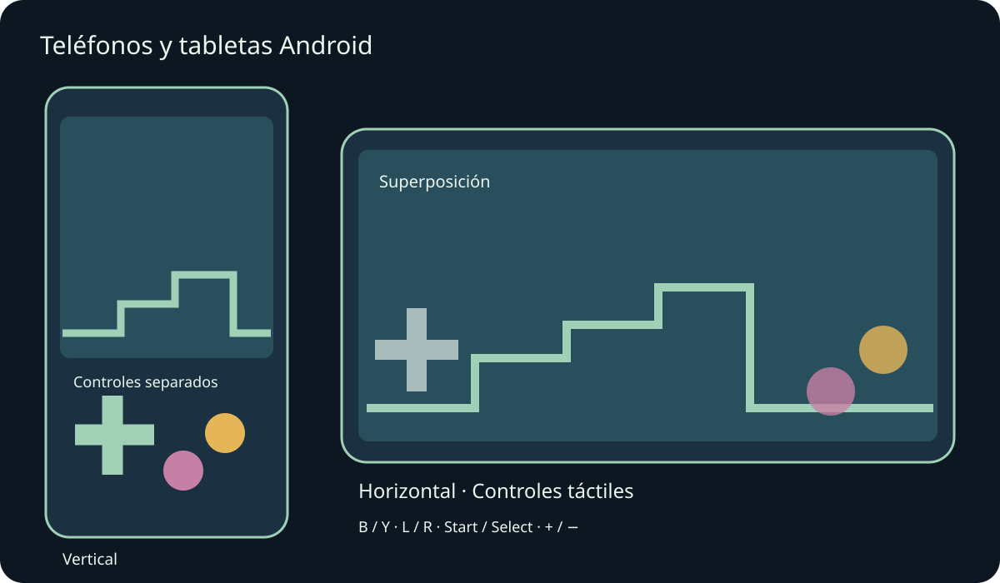
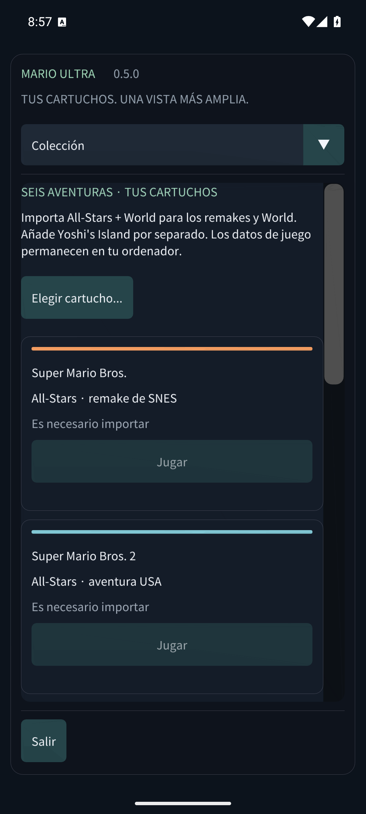

Mario Compilation Ultra 0.5.0
Teléfonos y tabletas Android

Instala el APK para teléfonos y tabletas Android y abre Mario Compilation Ultra. El APK público de GitHub pide tus cartuchos; la edición personal con ROMs ya incluye los seis juegos. El APK Quest es una aplicación distinta para el visor. Requiere Android 8 o posterior y OpenGL ES 3; incluye ARM64, ARMv7 y x86_64.
La rotación y el cambio de tamaño conservan la partida. Los márgenes protegen recortes y navegación del sistema.
Usa varios dedos para moverte, correr y saltar a la vez. Un mando conectado oculta los controles táctiles automáticos. Atrás de Android abre el menú.
Las letras corresponden a SNES: B salta e Y corre en la mayoría de Mario. L, R, Start y Select siguen disponibles. Vista recorre cinco modos; menos/más ajustan el zoom. Mantén rebobinar para retroceder. Opciones pausa inmediatamente. Desliza los menús; en pantallas estrechas elige sección en la lista superior.
- Orientación móvil
- Controles táctiles
- Distribución táctil
- Tamaño de botones táctiles
- Opacidad de controles táctiles
- Controles para zurdos
- Vibración táctil
- Mantener la pantalla encendida al jugar
Los estados, el rebobinado y las partidas usan almacenamiento privado. Al pasar a segundo plano se guarda la batería y, si está activado, el estado de reanudación 0. Actualizar con la misma firma conserva el progreso. Desinstalar o borrar datos elimina cartuchos y partidas locales. Los estados están en Partidas y sonido.
Las pruebas de emuladores de teléfono y tableta se distinguen del hardware físico. Rendimiento, mandos, recortes y ventanas pueden variar según el dispositivo. macOS sigue siendo experimental y no se ha probado en un Mac físico. Consulta la cobertura exacta en el informe.
